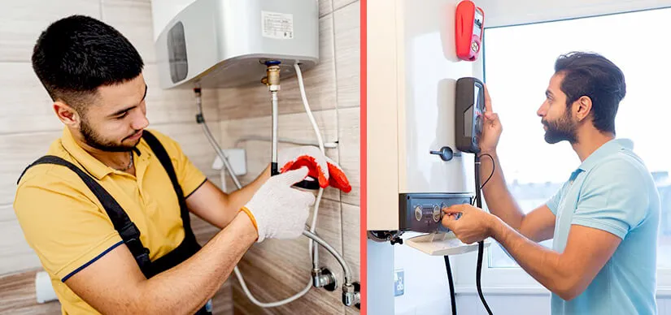

Install Your Own Water Heater! It’s Easier Than You Think

The water heater is arguably the most important appliance in your home. We cannot stress the importance enough. However, it is also one of the easiest appliances to install. By learning how professionals do it, you can do it as well. However, it is essential to mention that many new water heater brands will not cover your warranty if you choose the DIY route. But if you have bought a second-hand water heater, you might not have to worry about the warranty.
You can use simple steps for water heater installation in Orange County. Most of the basics for electric and gas water heaters are the same. This blog will discuss how you can install any water heater on your own.
Required tools
Gather all the tools you will need for water heater installation. You would need a screwdriver(preferably 4-in-1), wrench, tape, safety gear, a soldering torch, measurement tape, a tube cutter, a wire cutter, and a voltage tester. All of these tools are available at your nearest hardware store. You can also order them from Amazon, ebay, or any other reputable e-commerce site. There are also certain materials that you are going to need. You will need discharge pipes, a pressure relief valve, a venting pipe, etc.
Replace the water heater
If you are replacing water heaters, things might get trickier. However, you can remove it safely if you follow the provided guidelines. There are plenty of resources on the internet. You can also hire a professional water heater replacement company for the task. The task of removing the old water heater is as follows:
- Disconnect the electric line
- Drain the tank
- Disconnect the water line from the tank
- Remove all the connections
- Remove the water tank
Mount the tank
Place the water tank in an area of your choice. Then proceed to attach other parts to it. You will have to begin by installing the T&p valve and discharging the drain pipe. After that, install the other fittings as you see fit.
Attach pipes and fixtures
Now start to attach water lines to the water heater. Carefully treat the cold water inlet and hot water outlet. This part may vary a lot. It can range from just attaching the pipe into pre-made perfect holes or you might have to tape around the pipes to make it leak-proof. Either way, this is the most important part if you want to avoid plumbing leaks afterward. It might require soldering, multiple measurements, and wire cutting as necessary.
Now you have to attach the energy source to the water heater. For the gas water heater, try to use a flexible gas line if possible. Check for gas leaks first, then proceed to connect it to the water heater. Connect the wires for the electric water heater. Secure the connection, then move to the next step.
Test the water heater
You are so close to completing the installation now. Go to a place where a hot water tap exists and turn it on. Then turn on the cold water inlet. If the water starts coming out of the hot water tap after a while, your connection is okay. Now all you have to do is adjust the thermostat. Set the temperature to 110-125 Fahrenheit. The recommended temperature is 120 degrees Fahrenheit. Now all you have to do is wait till the water is hot. Use the water heater for a couple of days and record its performance. If the water heater is performing as it should be then everything is fine.
EZ Heat and Air is an esteemed plumbing company that offers quick and reliable water heater installation services in Orange County. If you are unsure about your skill it is better not to attempt DIY. Water heaters, especially gas water heaters can become dangerous if not treated well properly. EZ Heat and Air are active 24/7 for the whole year. We will respond within one hour of your call.
If your current water heater is not working properly and you want to replace it. It might be that it can be up and running with minor repairs. Water heater repair in Orange County is reliable and easy with EZ Heat and Air. We have a huge inventory of spare parts for all mainstream brands. Call us for a quick detection and estimation and see what we can do for you.